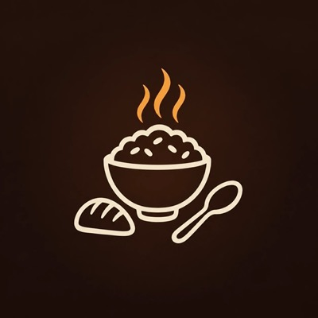
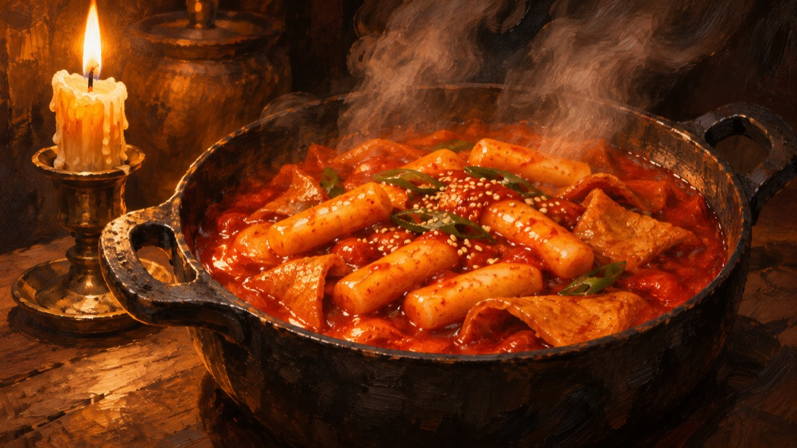
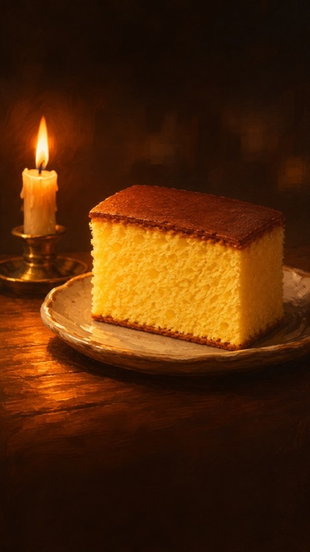
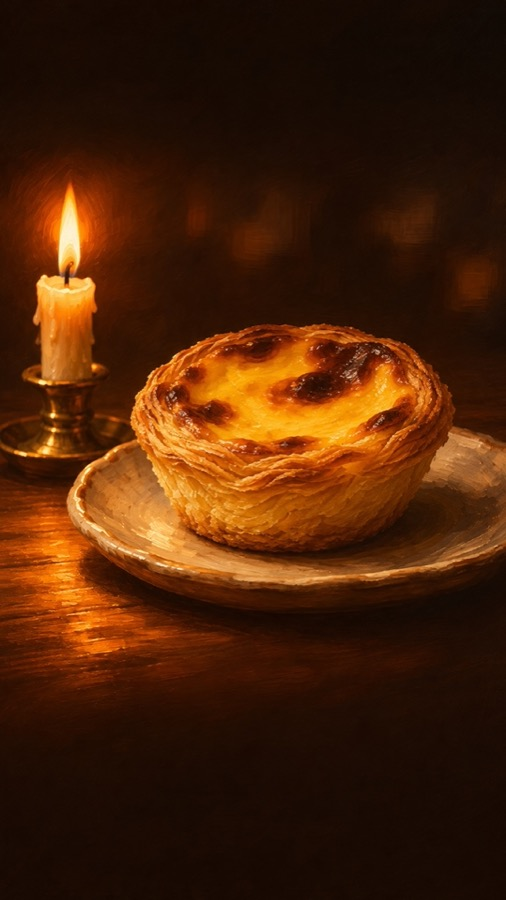
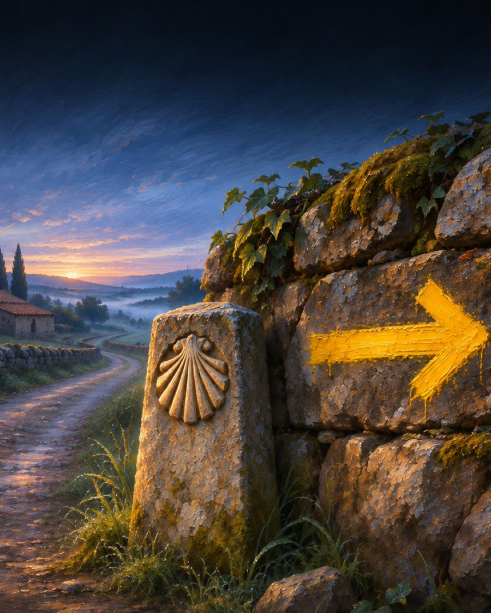
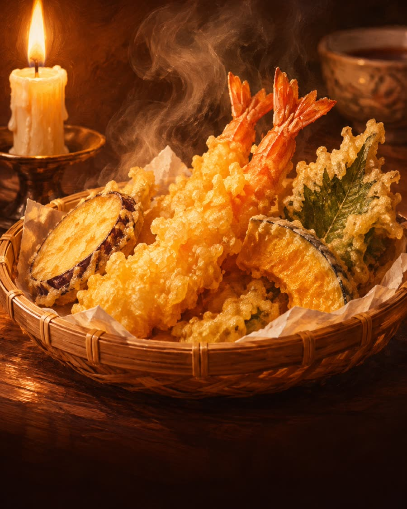
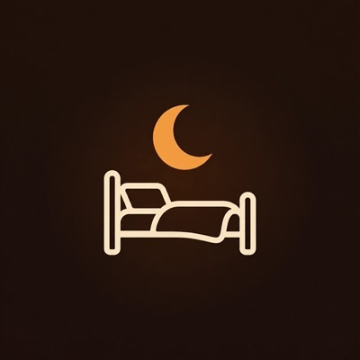
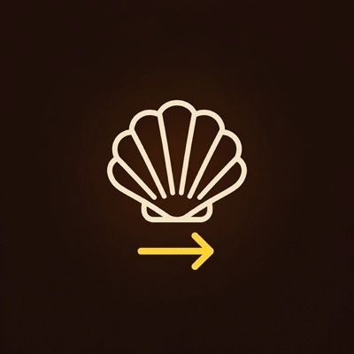
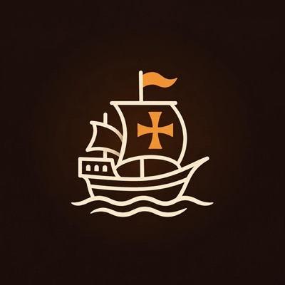
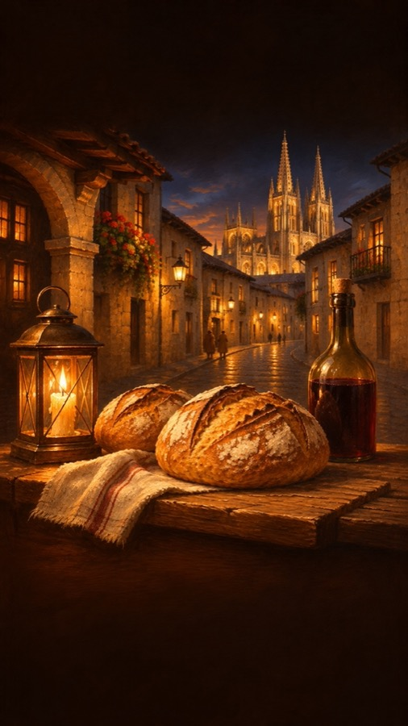

순례자의 한끼한밤
순례자의 한끼한밤


한끼
우리 식탁의 음식은 어디서 왔을까. 바다를 건너온 음식들의 옛날이야기.

A meal & a bed for pilgrims
순례길 32일 동안 낯선 사람들에게 한 끼를 얻어먹고, 하룻밤을 빌려 잤습니다. 그 고마움은 언젠가 포르투에서 갚기로 하고, 그때까지는 길과 음식에 얽힌 이야기를 한 편씩 꺼내 놓습니다.
한 편에 4분. 1분짜리 영상에 다 못 담은 이야기와 기록을 글로 풀었습니다.

1화떡볶이가 빨개진 건, 포르투갈 때문?500년 전 이 땅엔 고추가 없었다
2화400살 포르투갈 빵, 카스텔라포르투갈 배가 싣고 온 빵
3화에그타르트, 189년째 비밀수도원 부엌에서 시작된 레시피 4화순례자가 가리비를 단 이유천 년 동안 배낭에 매단 껍데기
4화순례자가 가리비를 단 이유천 년 동안 배낭에 매단 껍데기
 5화'빵'은 포르투갈 말빠웅 → 팡 → 빵
5화'빵'은 포르투갈 말빠웅 → 팡 → 빵

6화노란 화살표는 신부님이 그렸다800km를 안내하는 노란 페인트
7화'덴푸라'는 일본말이 아니다튀김 이름에 숨은 포르투갈 8화순례길의 진짜 끝, 피스테라산티아고 너머 땅끝 0km
8화순례길의 진짜 끝, 피스테라산티아고 너머 땅끝 0km
밥 이야기, 잠자리 이야기, 길 이야기, 그리고 바다 건너 포르투갈 이야기.

우리 식탁의 음식은 어디서 왔을까. 바다를 건너온 음식들의 옛날이야기.

천 년 전 순례자는 어디서 잤을까. 수도원과 알베르게, 길 위의 잠자리.

가리비 껍데기, 노란 화살표. 산티아고 가는 길에 숨은 이야기와 32일의 기록.

리스본을 떠난 배가 바꾼 아시아의 식탁, 그리고 언젠가 살고 싶은 도시 포르투.

언젠가 포르투의 어느 골목에서, 촛불을 켜고 기다리겠습니다.
그때는 이야기 대신, 따뜻한 밥 한 그릇을 내어드릴게요. 걷다 지친 순례자가 편히 누울 침대 하나와 함께.